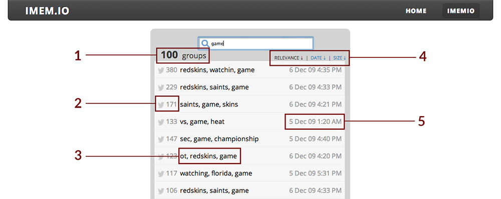
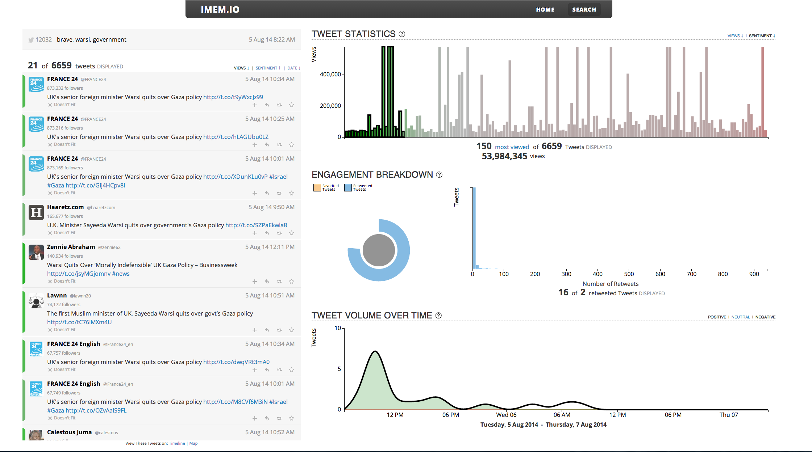

Imem.io
Summer 2014 was a rollercoaster of learning experiences. I worked at Systems & Technology Research (STR), a small software defense contractor. I worked with two other Olin interns to commercialize STR's tweet-grouping technology, originally developed for DARPA intelligence analysts. We did everything from identifying users, designing and implementing a new UI and backend tweaks, conducting usability tests all the way to handling marketing and customer relations. I began the summer with zero software experience and anxious; twelve weeks later, I left having developed a deployed webapp and confident in my abilities to figure my way through a software challenge.
A Fast Walk Through Imemio
Imemio (eye-mehm-io) is a webapp that allows the user to, with a quick topic search, get a finger on the pulse of Twitter going-ons. The search returns groups of Tweets rather than thousands of individual Tweets, allowing the user to get a quick glimpse into the lay of the land.
(1) Total number of groups from search. (2) The number of Tweets in a group. (3) The common keywords in each group.
(4) Group sorting capabilities: relevance, date/time, group size. (5) Timestamp of the earliest Tweet in group.
As useful as high-level overviews are, Imemio shines once a group is selected. An visually-rich dashboard is displayed, at once providing information to questions such as: How do people feel about this topic? Who is talking about it, and by how much?

The left side of the above image shows the group and its component Tweets. These Tweets are sortable by when each Tweet was posted, the Tweet's sentiment (positive/negative), and the number of followers the Tweet's author had.
The right side of the screen provide information depth. The bar chart (top) shows 150 Tweets - either the most viewed or the most polar 150, based on the user's choice. These 150 can further be sorted by the number of views (bar height) or sentiment (bar color).
At the center, the sunburst displays how many of the Tweets were favorited or retweeted, information that can be used to extrapolate how viral the group is. The histogram provides retweet information detail: how many tweets were retweeted, and by how much?
The timeline at the bottom shows the volume of Tweets over time. Subplots display Tweet sentiment over time.
Finally, all the visuals can be selected for greater resolution. The visuals update to represent that selection. Once a selection is made, the user can sort for further analysis. For example:
This shows selection in the bar chart, specifically selection of the most positive of the most viewed Tweets in the group. All the visuals - the Tweets on the left, the sunburst, histogram, and timeline on the right - all reflect that change. The ability to select and sort allows the user to gain greater insight to topics of interest.
Behind the Scenes
Imemio is the result of both Javascript and user design wrangling. When first given our assignment, it was very tempting to simply jump in and start building features that we thought would be flashy and cool. However, once the excitement cooled, we were able to take a step back and our Olin training kicked in.
We had to build something with this tweet-batching technology, but what? Who exactly is Imemio trying to appeal to? What do these users think they want? What do these users actually want? To build a product that had even a remote chance of surviving, these questions needed to be thoroughly answered.
Needs: What does the user group need on the daily? Values: What does the user group care about?
Aspirations: Pretend the product is a magic wand. After waving it, how will the user group transorm?
The nine general user groups identified who would most likely take advantage of Imemio: Jack of all news, People with stocks, IT folks, Reporters, Venture capitalists, Groupies, CEOs, Senators, People with many accounts.
After two weeks of Post-Its, avidly using Twitter to get feel of the service, and repeatedly revisiting and revising our framework, we were able to move on to building Imemio.
Links
Imemio website. Note: Dead link; STR has since stopped hosting the site.
Market research compiled to help in determining our niche.